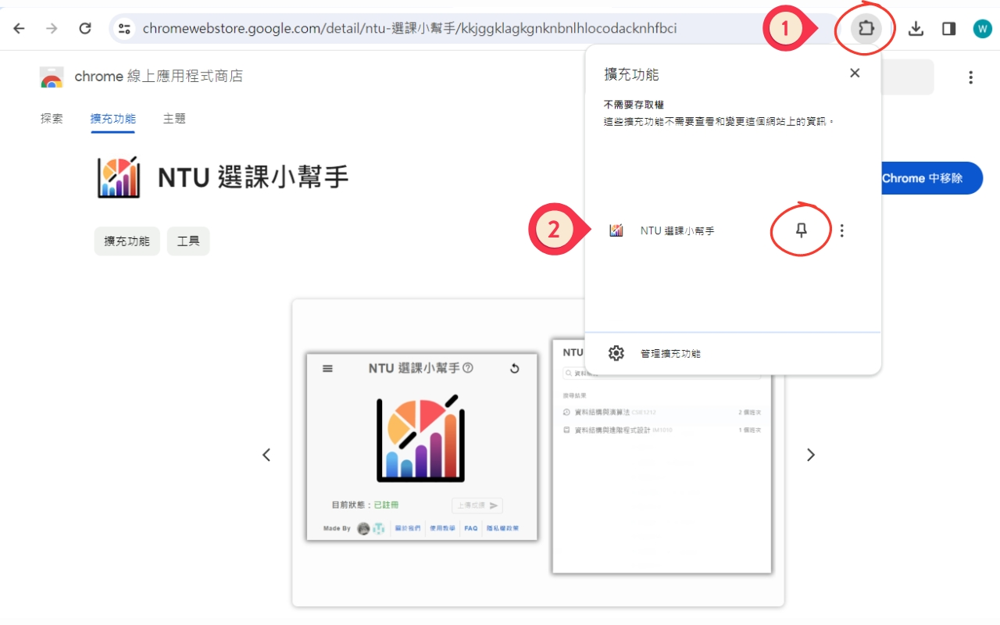
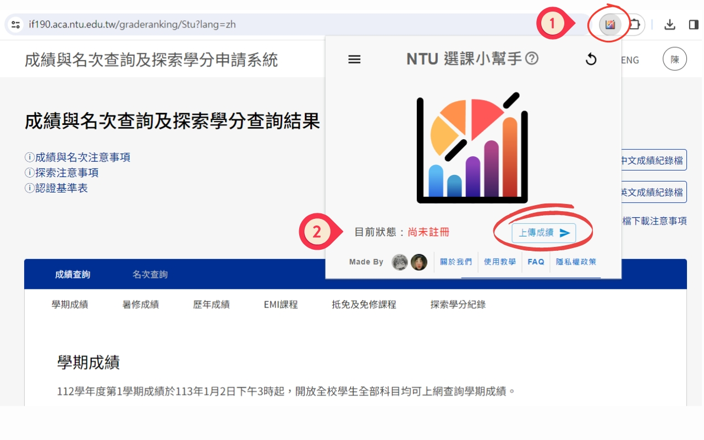
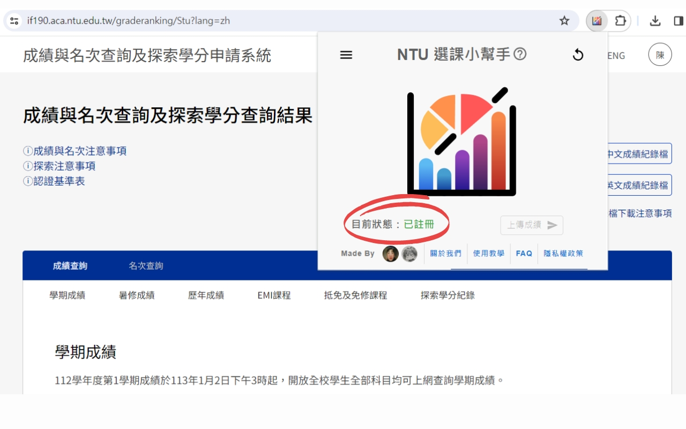
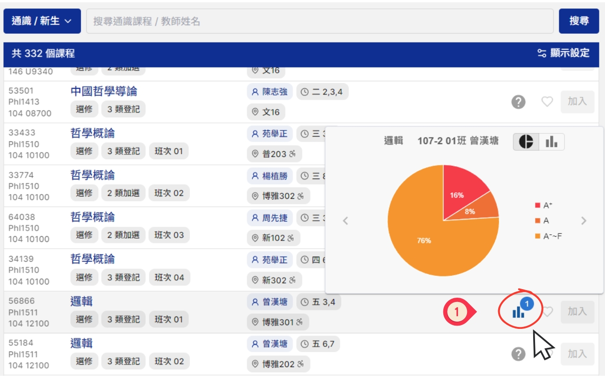
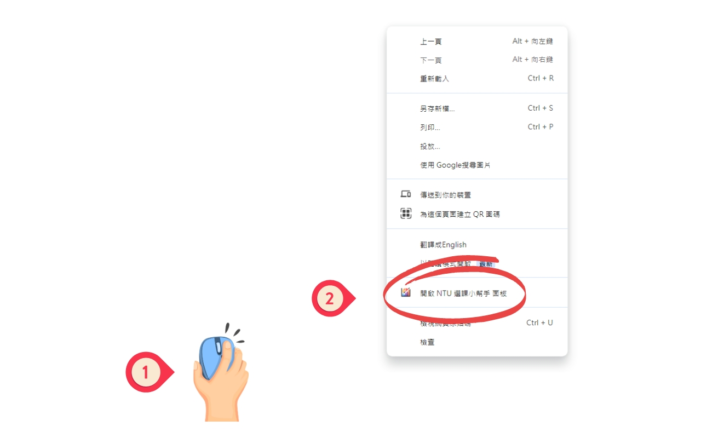
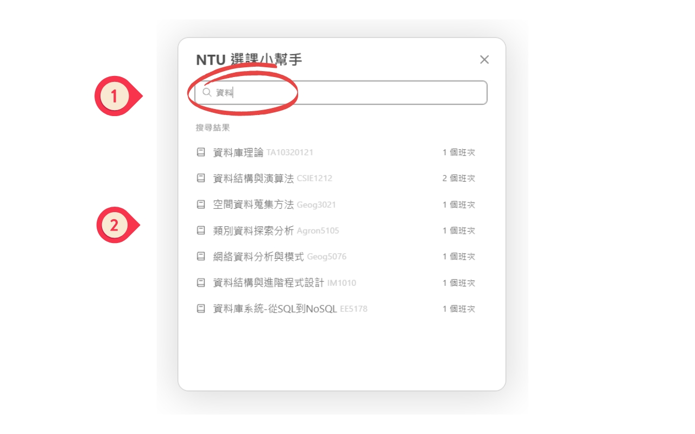
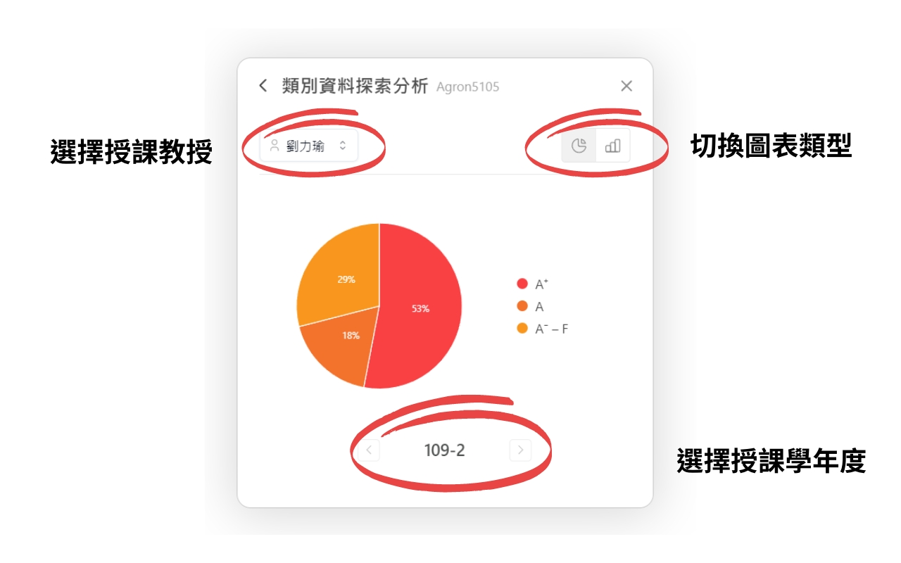

使用教學
✯ 首次使用
➢ Step 1. 下載 NTU 選課小幫手
§ 下載連結： Chrome 線上應用程式商店
➢ Step 2. (Optional) 釘選 NTU 選課小幫手

➢ Step 3. 註冊 NTU 選課小幫手
- 前往 成績與名次查詢及探索學分申請系統
- 在成績查詢頁面上，點選NTU選課小幫手上的「上傳成績」
- 等待數秒後，若顯示「已註冊」則代表註冊成功。無法註冊 請參考「疑難排解」
✯ 查詢成績圖表
➢ 1. 臺大新課程網
- 前往 臺大新課程網
- 搜尋任一課程即會在課程欄位右側出現圖表符號，將滑鼠移上去即會顯示成績圖表 
➢ 2. NTU選課小幫手
- 在任一網頁中點擊 滑鼠右鍵 或是使用鍵盤快捷鍵 「Alt+G」，
並點選「開啟 NTU選課小幫手 面板」
(無法在google搜尋主頁或是 “chrome://“ 開頭的頁面使用)
- 搜尋任一課程的名字，在下方點選您想查詢的課程
- 查看該課程之詳細成績圖表，點擊左上角按鈕返回搜尋頁面